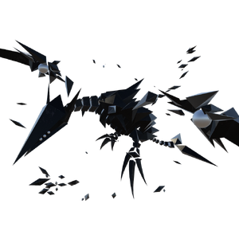

Pandora
背景

在 LEGION Project 末尾，我们创造出了远超最初意图的东西。
不，也许它们才是我们一直真正需要的东西。CODE: BLACK LILY 这类实体所拥有的 Cores，正是我们一直在寻找的。
然而，处理它们需要最高程度的谨慎。哪怕只有一个样本逃出收容，这条时间线很可能会在短时间内崩塌。
我们原本拥有的军事实力有其极限。它们的装甲极其坚韧，常规武器被证明对其无效。
我们得到的结论很简单：
用相同的力量与它们作战。
Pandora 是对抗我们自身傲慢的最后保险，是为收容灾厄而建造的最后堡垒。
不论已经多迟，它都会消灭那些被诅咒的怪物，并守护希望本身。
策略
Pandora 是飞行 Boss，使用大型冰 AoE 和快速冲刺攻击对手。它可以制造需要跳过的冰 shard 波，并向战场横向发射冰激光。
HP 达到 50% 后，它会变得更具侵略性，使用规模更大、更具毁灭性的攻击，并高速掠过天空，释放更大型、可穿透防御的冰爆。
统计
基础 HP：24000
伤害：物理和冰霜
该 Boss 由两个阶段组成。
| 属性 | 抗性 |
|---|---|
| 物理 | 中性 (1x) |
| 火焰 | 弱点 (1.5x) |
| 冰霜 | 抗性 (0.3x) |
| 电击 | 抗性 (0.8x) |
| 光耀 | 弱点 (1.1x) |
| 暗影 | 抗性 (0.75x) |
| 毒 | 中性 (1x) |